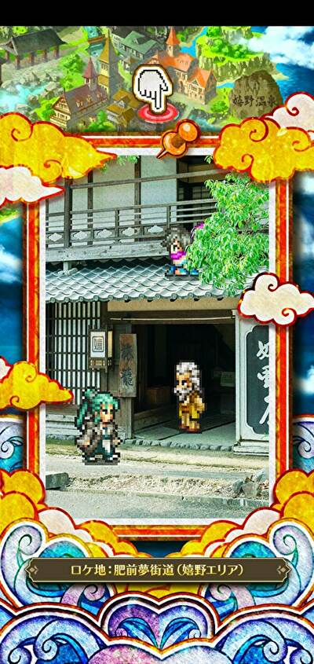

ロマサガＲＳ佐賀県コラボを振り返る
ホーム > ロマサガＲＳ > ロマサガＲＳ佐賀コラボ
敵情報
雑魚敵
戦闘員が風呂上がり（笑）何か違和感あると思ったら、
— コッペリア (@s204_555) July 29, 2021
戦闘員たち風呂上がりやん・・・。
しっかり佐賀満喫してる！#ロマ佐賀 pic.twitter.com/yFG8XXEIIR
7/28 音の将魔とシュウザー
7/29 樹の将魔とアラクーネ
樹の将魔にのってるのは佐賀の県鳥カササギカササギ（カチガラス）の紹介樹の将魔にのってるのは
— やしあ (@yashiaRS) July 29, 2021
佐賀の県鳥カササギ#ロマ佐賀 pic.twitter.com/6gixLUcZPZ
7/30 水の将魔とメタルブラック
7/31 炎の将魔とベルヴァ
新スタイル
アルカイザー（着せ替え）
【お仕事情報】2021年7月28日に『ロマンシング サガ リ・ユニバース』にて、私が描かせていただきました「[ヒーローのジレンマ]レッド」が佐賀県コラボ配布スキンとして実装されました。
— 竜徹 (@ryuutetusai) July 30, 2021
このスキンに着せ替えて、佐賀県コラボを楽しんでいただけますと幸いです！#ロマサガRS #ロマ佐賀 pic.twitter.com/ePsVoMJO0K
手に持っているちゃんぽんは「井出ちゃんぽん」
本物の井手ちゃんぽんの画像（公式サイトより引用）
「井手ちゃんぽん」本店の公式サイト
ナカジマ零式
エミリア
メイレン
SQUARE ENIX様の「ロマンシング サガ リ・ユニバース」にて、
— チーコ (@chyko7080) July 31, 2021
『SSメイレン』を描かせて頂きました。
よろしくお願いしますhttps://t.co/Bd1oCa4wAF#ロマサガRS pic.twitter.com/qAzFYyZaGt
猫が一緒に書き込まれていますね。
この猫は嬉野温泉にある「シーボルトのあし湯」という場所に実在する猫らしいです。ｶﾜ(・∀・)ｲｲ!!
「猫の石像があるよ」「ってか猫じゃね？」 冗談かと思ったらマジだった
猫だって温泉に入りたい！ 佐賀・嬉野で「温泉猫」が発見される
うれしの温泉情報局
「猫の石像がありますよ」
— 水野旅館（佐賀・唐津）支配人のアカウント (@rutumix) November 18, 2019
「ってか猫じゃね？」
と通りすがりの方がコメントしているのが印象的でした。
泳いだのか、ジャンプしたのかも謎です。 pic.twitter.com/bt19BLLNgn


実際の写真は以下

椎葉山荘 公式サイト

肥前夢街道は忍者村を売りにしているみたいですね。
忍者村 肥前夢街道 公式サイト
twitterもやっているみたい。佐賀コラボについても発信していました。
遂に発表されましま！
— 元祖忍者村 肥前夢街道【公式】 (@hizenyumekaidou) July 28, 2021
ロマシングサガRS佐賀県コラボ！
今回なんと佐賀元祖忍者村肥前夢街道もコラボしております！ pic.twitter.com/1zNLamHy5w

公式サイト（武雄市観光協会）

ソバ屋さん。ソバの実から自家農園で栽培している点で他店と一線を画しているらしい。

木漏れ陽（こもれび）／三瀬（佐賀観光情報）
アルカイザー（ガチャ）
コーデリア
ジニー
ハッピースーベニア#ロマ佐賀 #丸ぼうろ＃小城羊羹#けえらん#松露饅頭#世界の名言2選#ジニー・ナイトワネット
— ルナぱす (@tetsubane_snare) July 31, 2021
パンがなければ佐賀銘菓
たべればいいのに pic.twitter.com/BMjk02tL8U
ウィル
リッチ
完全に一致#ロマ佐賀 pic.twitter.com/HQTNz0LmZI
— 朝霧 (@HMX_77) July 29, 2021
その他
一般情報
国鉄268号蒸気機関車【JR鳥栖駅】鉄道ファンにはたまらない駅！ 陶版について
これは佐賀県唐津市内の陶版なのですが、佐賀には街の至る所に陶版が設置されていてどれもとても美しいのです。#ロマ佐賀 pic.twitter.com/yK4QGWlQ6b
— 市川雅統 Masanori Ichikawa (@saga_ichikawa) July 29, 2021
佐賀県広報広聴課からサガのお知らせ
【お知らせ】
— 佐賀県広報広聴課 (@saga_kouhou) July 29, 2021
『ロマンシング佐賀2021』と『ロマンシング サガ リ・ユニバース』のゲーム内コラボ第１弾開始✨
「みんなでいくばい！SaGa風呂制圧戦」を開催♨️
詳しくはこちら▼https://t.co/05XN0156pi#ロマ佐賀 pic.twitter.com/n2u91VpRPv
雷竜が聖剣伝説のラスボスに似てる
君、聖剣伝説とかに出ていなかった？ pic.twitter.com/XxKQWGWWcS
— やる夫茶 (@yaruocha) July 28, 2021
去年同様、牛に話しかける謎の遊びが流行る（笑）
お土産(牛) pic.twitter.com/WQjFRw3RMN
— やしあ (@yashiaRS) July 29, 2021
今夜は焼き肉かな～#ロマサガRS#ロマ佐賀 pic.twitter.com/erISOOReTU
— sagamax (@sagamax__) July 31, 2021
去年のはこちら巷では推しで牛に話しかけるのが流行ってるそうですね、私もいざ！
— cestus (@cestus777) July 30, 2021
(´；ω；｀)ﾌﾞﾜﾜｯ#ロマ佐賀 pic.twitter.com/wLL72q2AKE
とてもじゃないけど全部はピックアップはできないので興味ある方はここで探してみて
節子、それイカやない。牛や。#ロマサガRS pic.twitter.com/pJP4l5AQsD
— Mid-night (@Midnigh09841678) May 10, 2020
牛さん逃げて…#ロマサガRS pic.twitter.com/owbjUUZB7b
— うえさま@乱れ日月火 (@uesama0706) May 12, 2020
#ロマサガRS
— oyana (@_o_y_a_n_a) May 16, 2020
みなさんの牛に話しかけるシリーズ楽しませてもらっています。そろそろ終わりなので、さみしくなりますね。 pic.twitter.com/3WlxJT4qHg
あなたに幸いが訪れますように・・・って仰ってますが🧐
— さとちゃんGAMES (@GAMES84207731) May 12, 2020
この牛さんの末路って・・・
みんなには喜ばれるとはおもうけど・・・ねぇ😅#ロマサガ #ロマサガRS #ロマ佐賀 pic.twitter.com/y0OxarA1W4
牛さん、いつもありがとう。#ロマサガRS pic.twitter.com/tdsTByMP5u
— しぇりろま@＼サガ！！／ (@sherylatro) May 16, 2020
今更ながら牛に話しかけるやつ、個人的はゆきだるまとプラタリアがツボですた(°▽°)#ロマサガRS pic.twitter.com/bZQMjOitSa
— たれ (@L6XYRfJqxILWX8X) May 16, 2020
皆さん牛に話を聞いてもらうのが流行ってるみたいで、ウチでもストライフさんが話を聞いてもらってました(´∇｀)❁⃘*.ﾟ#ロマサガRS #力こそパワー pic.twitter.com/OTIyxXiRnE
— きんじろぅ@ロマサガRS (@RS76562279) May 15, 2020
ゆきだるまからのまさかの牛一頭のプレゼントw
— 黒豆柴 (@W8UsXHdu2XHLznK) May 16, 2020
たまたまタッチしたらナイスタイミングw
思わず笑ってしまいました(・∀・)#ロマサガRS pic.twitter.com/bVSpf5sOtO
流行りの牛に話しかけるチャレンジしてみた♪.°ʚ(*´꒳`*)ɞ°.#ロマサガRS pic.twitter.com/RzKpQ9F3ys
— かりんこ⌄̈⃝ (@KarinkoRs) May 17, 2020
#ロマサガRS
— ヘルニキ (@HERUNIKI) May 18, 2020
牛に話しかける人々シリーズが、
面白かったので便乗しますw pic.twitter.com/Dn6mlF9r5z
#ロマサガRS
— ヘルニキ (@HERUNIKI) May 18, 2020
うーん、無理w pic.twitter.com/Isg0kZU1tA
これは牛関連
ロマサガで牛をツイートしてる人がいるけど、自分の中でゲームで牛といったらこれを思い出す。 pic.twitter.com/AoIVhrtDVV
— 村雨@P_FF (@murasame_2000) May 12, 2020
最後に公式サイトへのリンクを張って終わりにしたいと思います。
Romancing 佐賀 2021 今度は「サガ風呂」 ロマ佐賀企画、温泉地とコラボ 嬉野、武雄、古湯の魅力発信
以上！